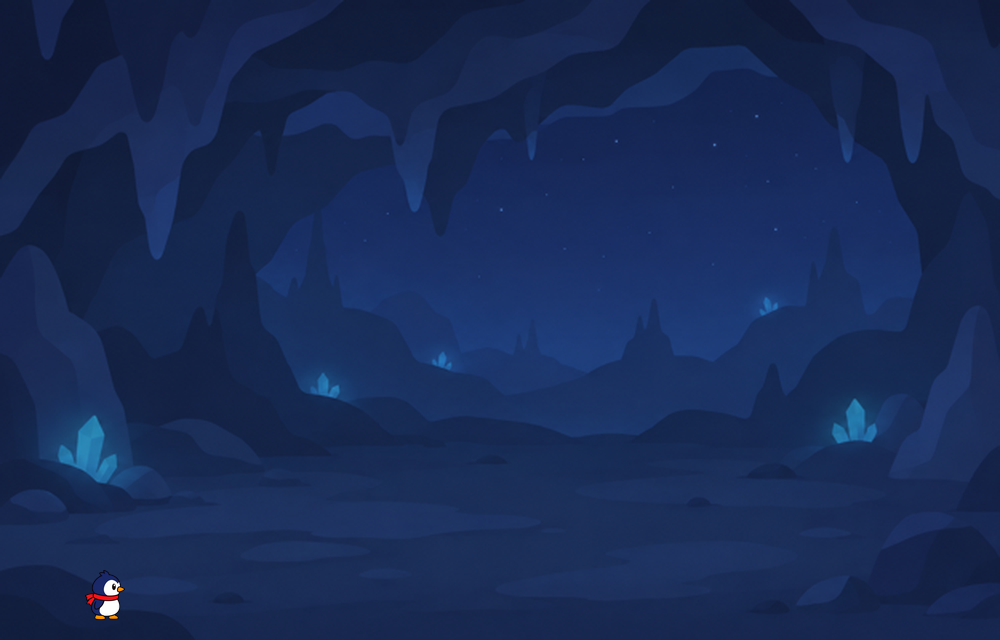

3장. 플레이어 놓기
2장에서는 게임 창에 동굴 배경을 깔았습니다. 이번 장에서는 배경 왼쪽 아래에 펭귄을 놓습니다. Player 클래스에서 플레이어의 그림과 위치를 정하고, BubbleFrame에서 플레이어를 창에 추가합니다.
장을 마치면 펭귄이 오른쪽을 보고 서 있는 화면이 나타납니다.

3-1 플레이어를 창에 놓기
키보드로 플레이어를 움직이려면 먼저 움직일 대상이 화면에 있어야 합니다. 지금까지 만든 창에는 배경만 있으므로, 플레이어를 나타낼 클래스를 추가합니다. 이번 절에서는 펭귄을 정해진 위치에 놓습니다. 키보드로 움직이는 기능은 4장에서 붙입니다.
Player를 만들고 창에 추가하기
새 파일: src/bubble/game/Player.java
수정 파일: src/bubble/game/BubbleFrame.java
이클립스의 bubble.game 패키지에 Player 클래스를 만듭니다. 다음 코드를 입력한 뒤, 기존 BubbleFrame에도 플레이어를 생성하고 추가하는 코드를 넣습니다. 배경을 설정한 다음, pack()을 호출하기 전에 추가합니다.
package bubble.game;import javax.swing.ImageIcon;import javax.swing.JLabel;public class Player extends JLabel { private int x; private int y; private ImageIcon playerR; public Player() { playerR = new ImageIcon("image/playerR.png"); x = 80; y = 570; setIcon(playerR); setSize(50, 50); setLocation(x, y); }}public class BubbleFrame extends JFrame { private Player player; public BubbleFrame() { setTitle("버블 게임"); setContentPane(new JLabel(new ImageIcon("image/background.png"))); setLayout(null); player = new Player(); add(player); pack(); setResizable(false); setLocationRelativeTo(null);JLabel에 플레이어 그림 담기
Player는 JLabel을 상속합니다. JLabel은 글자나 그림을 표시하는 Swing 컴포넌트입니다. 2장에서는 배경 그림을 담는 데 사용했고, 이번에는 플레이어 그림을 표시하는 데 사용합니다.
JLabel을 상속하면 Player에서도 setIcon(), setSize(), setLocation()을 사용할 수 있습니다. 생성자에서 플레이어의 그림과 위치를 정해 두면, new Player()로 객체를 만들 때 화면에 놓을 준비까지 끝납니다.
playerR은 오른쪽을 보는 펭귄 그림을 보관하는 필드입니다. ImageIcon은 이미지 파일을 읽어 JLabel에 표시할 아이콘으로 준비합니다.
new ImageIcon("image/playerR.png")는 제공받은 펭귄 그림을 읽습니다. 앞 장처럼 작업 폴더를 bubble로 맞춥니다.
그림을 읽은 뒤에는 setIcon(playerR)으로 플레이어에 연결합니다. ImageIcon은 그림을 준비하고, setIcon()은 준비한 그림을 JLabel에 표시하도록 지정합니다.
플레이어의 크기와 위치 정하기
2장에서 레이아웃 관리자를 끄고 절대 배치를 사용하도록 설정했습니다. 따라서 플레이어도 크기와 위치를 코드로 지정해야 합니다.
setSize(50, 50)은 플레이어 컴포넌트의 너비와 높이를 각각 50픽셀로 정합니다. 그림을 확대하거나 축소하는 메서드는 아닙니다.
x와 y는 플레이어를 놓을 좌표입니다. 생성자에서 x에 80, y에 570을 넣고, setLocation(x, y)으로 위치를 지정합니다.
좌표의 기준은 부모 컴포넌트의 왼쪽 위입니다. 가로 좌표는 오른쪽으로 갈수록 커지고, 세로 좌표는 아래로 갈수록 커집니다. 따라서 (80, 570)은 배경의 왼쪽 위에서 오른쪽으로 80픽셀, 아래로 570픽셀 떨어진 자리입니다. 이 자리에 플레이어 컴포넌트의 왼쪽 위 모서리가 놓입니다.
준비한 플레이어를 배경 위에 붙이기
BubbleFrame의 player 필드는 생성한 플레이어를 보관합니다. 창 생성자에서 new Player()를 실행하면 플레이어의 그림과 크기, 위치가 설정됩니다.
new Player()로 준비한 플레이어를 add(player)로 배경 위에 붙입니다. 앞 장에서 배경 JLabel을 콘텐츠 영역으로 지정했으므로 이 영역에 추가됩니다.
오른쪽을 보는 펭귄 확인하기
두 파일을 저장하고, main이 있는 BubbleFrame을 Run As → Java Application으로 실행합니다.
실행 결과
동굴 배경의 왼쪽 아래에 펭귄이 오른쪽을 보고 서 있습니다. 방향키를 눌러도 아직 움직이지 않습니다.
배경만 보인다면 new Player() 다음에 add(player)를 넣었는지 확인합니다. 플레이어 그림이 나타나지 않으면 프로젝트의 image 폴더에 playerR.png가 있는지 확인합니다. 코드에 적은 파일 이름과 대소문자가 같은지도 확인합니다.
3장 완성 코드 보관하기
화면을 확인했으면 앞 장과 같은 방식으로 이번 장의 완성 코드를 ex03에 복사해 보관합니다. 다음 장의 코드는 계속 src/bubble/game에서 작성합니다.